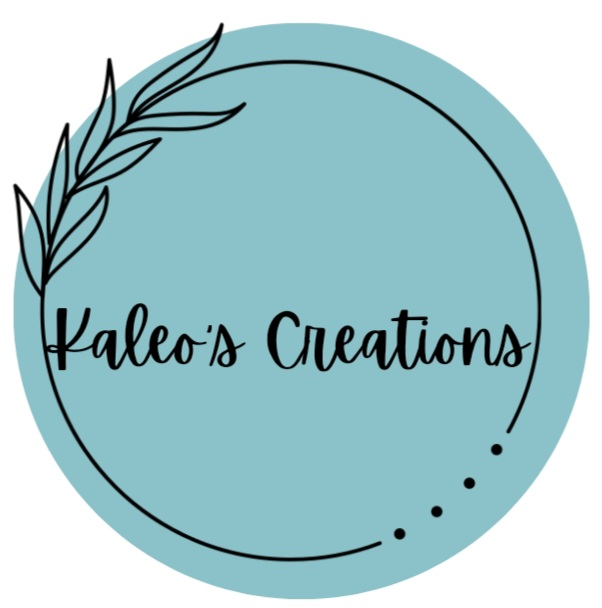

The Owner and founder of Kaleoscreations is Kelsey Rivera also known as Kaleo'omakani'olu'olu. The latter name is where the company's name originates. This company was founded in 2022 here in Waimānalo, Hawaii. I started this bussiness when I was twelve years old and it is still going strong. Not many people know about this company but now you do! I do hope you will choose to support a local bussiness, or at the very least look at what I have to offer.
Welcome to Kaleoscreations crafting page! This is a great place for affordable, approprietly priced, hand made jewlery here in Hawaii.
Kaleoscreations offers everything from easy bracelets and anklets to earrings and necklaces that make you feel like a million bucks. Let us help you accesorize your next outfit.
This site is under construction. Check back for: